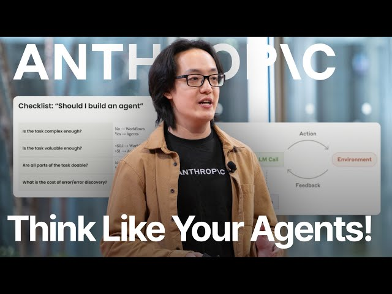
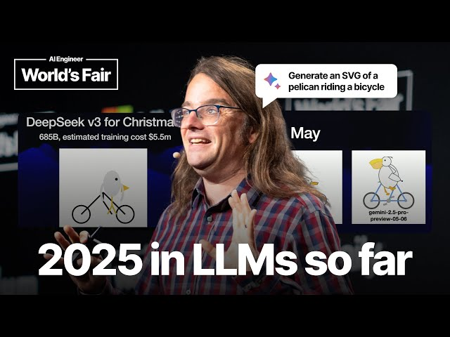

A system that pairs a language model with three things: an environment to act in, a set of tools to act with, and a system prompt that defines the job. ↻It runs them in a loop until the task is completed.
Barry Zhang, Anthropic — How We Build Effective Agents,
AI Engineer World's Fair, 2025.

Barry Zhang — Anthropic
Yao et al. — Princeton + Google

Simon Willison — Django co-creator, simonwillison.net